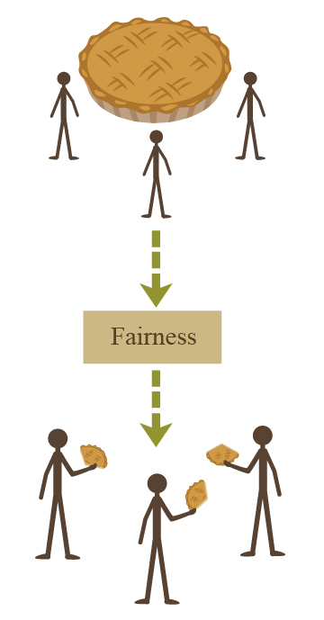

Eliezer Yudkowsky, 10 December 2012 04:26AM
Followup to: Mixed Reference: The Great Reductionist Project [http://lesswrong.com/lw/frz/mixed_reference_the_great_reductionist_project/]
Humans need fantasy to be human.
"Tooth fairies? Hogfathers? Little—"
Yes. As practice. You have to start out learning to believe the little lies.
"So we can believe the big ones?"
Yes. Justice. Mercy. Duty. That sort of thing.
"They're not the same at all!"
You think so? Then take the universe and grind it down to the finest powder and sieve it through the finest sieve and then show me one atom of justice, one molecule of mercy.
- Susan and Death, in Hogfather by Terry Pratchett
Suppose three people find a pie [http://lesswrong.com/lw/ru/the_bedrock_of_fairness/] - that is, three people exactly simultaneously spot a pie which has been exogenously generated in unclaimed territory. Zaire wants the entire pie; Yancy thinks that 1/3 each is fair; and Xannon thinks that fair would be taking into equal account everyone's ideas about what is "fair".
I myself would say unhesitatingly that a third of the pie each, is fair. "Fairness", as an ethical concept, can get a lot more complicated in more elaborate contexts. But in this simple context, a lot of other things that "fairness" could depend on, like work inputs, have been eliminated or made constant. Assuming no relevant conditions other than those already stated, "fairness" simplifies to the mathematical procedure of splitting the pie into equal parts; and when this logical function is run over physical reality, it outputs "1/3 for Zaire, 1/3 for Yancy, 1/3 for Xannon".
Or to put it another way - just like we get "If Oswald hadn't shot Kennedy, nobody else would've" by running a logical function over a true causal model [http://lesswrong.com/lw/frz/mixed_reference_the_great_reductionist_project/] - similarly, we can get the hypothetical 'fair' situation, whether or not it actually happens, by running the physical starting scenario through a logical function that describes what a 'fair' outcome would look like:

So am I (as Zaire would claim) just assuming-by-authority that I get to have everything my way, since I'm not defining 'fairness' the way Zaire wants to define it?
No more than mathematicians are flatly ordering everyone to assume-without-proof that two different numbers can't have the same successor [http://lesswrong.com/lw/f4e/logical_pinpointing/]. For fairness to be what everyone thinks is "fair" would be entirely circular, structurally isomorphic to "Fzeem is what everyone thinks is fzeem"... or like trying to define the counting numbers as "whatever anyone thinks is a number". It only even looks coherent because everyone secretly already has a mental picture of "numbers" - because their brain already navigated to the referent. But something akin to axioms is needed to talk about "numbers, as opposed to something else" in the first place. Even an inchoate mental image of "0, 1, 2, ..." implies the axioms no less than a formal statement - we can extract the axioms back out by asking questions about this rough mental image [http://lesswrong.com/lw/f4e/logical_pinpointing/].
Similarly, the intuition that fairness has something to do with dividing up the pie equally, plays a role akin to secretly already having "0, 1, 2, ..." in mind as the subject of mathematical conversation. You need axioms, not as assumptions that aren't justified, but as pointers to what the heck the conversation is supposed to be about.
Multiple philosophers have suggested that this stance seems similar to "rigid designation", i.e., when I say 'fair' it intrinsically, rigidly refers to something-to-do-with-equal-division. I confess I don't see it that way myself - if somebody thinks of Euclidean geometry when you utter the sound "num-berz" they're not doing anything false, they're associating the sound to a different logical thingy. It's not about words with intrinsically rigid referential power, it's that the words are window dressing on the underlying entities. I want to talk about a particular logical entity, as it might be defined by either axioms or inchoate images, regardless of which word-sounds may be associated to it. If you want to call that "rigid designation", that seems to me like adding a level of indirection; I don't care about the word 'fair' in the first place, I care about the logical entity of fairness. (Or to put it even more sharply: since my ontology does not have room for physics, logic, plus designation, I'm not very interested in discussing this 'rigid designation' business unless it's being reduced to something else.)
Once issues of justice become more complicated and all the contextual variables get added back in, we might not be sure if adisagreement about 'fairness' reflects:
There's a lot of people who feel that this picture leaves out something fundamental, especially once we make the jump from "fair" to the broader concept of "moral", "good", or "right". And it's this worry about leaving-out-something-fundamental that I hope to address next...
...but please note, if we confess that 'right' lives in a world of physics and logic - because everything lives in a world of physics and logic - then we have to translate 'right' into those terms somehow.
And that is the answer Susan should have given - if she could talk about sufficiently advanced epistemology, sufficiently fast - to Death's entire statement:
You think so? Then take the universe and grind it down to the finest powder and sieve it through the finest sieve and then show me one atom of justice, one molecule of mercy. And yet — Death waved a hand. And yet you act as if there is some ideal order in the world, as if there is some ... rightness in the universe by which it may be judged.
"But!" Susan should've said. "When we judge the universe we're comparing it to a logical referent, a sort of thing that isn't in the universe! Why, it's just like looking at a heap of 2 apples and a heap of 3 apples on a table, and comparing their invisible product to the number 6 - there isn't any 6 if you grind up the whole table, even if you grind up the whole universe, but the product is still 6, physico-logically speaking."
If you require that Rightness be written on some particular great Stone Tablet somewhere - to be "a light that shines from the sky", outside people, as a different Terry Pratchett book put it - then indeed, there's no such Stone Tablet anywhere in our universe.
But there shouldn't be such a Stone Tablet, given standard intuitions about morality. This follows from the Euthryphro Dilemma out of ancient Greece.
The original Euthryphro dilemma goes, "Is it pious because it is loved by the gods, or loved by the gods because it is pious?" The religious version goes, "Is it good because it is commanded by God, or does God command it because it is good?"
The standard atheist reply is: "Would you say that it's an intrinsically good thing - even if the event has no further causal consequences which are good - to slaughter babies or torture people, if that's what God says to do? If so, then it seems to me that you have no morality and that your religion has destroyed your humanity."
So if we can't make it good to slaughter babies by tweaking the state of God, then morality doesn't come from God; so goes the standard atheist argument.
But if you can't make it good to slaughter babies by tweaking the physical state of anything - if we can't imagine a world where some great Stone Tablet of Morality has been physically rewritten, and what is right has changed - then this is telling us that...
(drumroll)
...what's "right" is a logical thingy rather than a physical thingy, that's all. The mark of a logical validity is that we can't concretely visualize a coherent possible world where the proposition is false.
And I mention this in hopes that I can show that it is not moral anti-realism to say that moral statements take their truth-value from logical entities. Even in Ancient Greece, philosophers implicitly knew that 'morality' ought to be such an entity - that it couldn't be something you found when you ground the Universe to powder, because then you could resprinkle the powder and make it wonderful to kill babies - though they didn't know how to say what they knew.
There's a lot of people who still feel that Death would be right, if the universe were all physical; that the kind of dry logical entity I'm describing here, isn't sufficient to carry the bright alive feeling of goodness.
And there are others who accept that physics and logic is everything, but who - I think mistakenly - go ahead and also accept Death's stance that this makes morality a lie, or, in lesser form, that the bright alive feeling can't make it. (Sort of like people who accept an incompatibilist theory of free will, also accept physics, and conclude with sorrow that they are indeed being controlled by physics [http://lesswrong.com/lw/r0/thou_art_physics/].)
In case anyone is bored that I'm still trying to fight this battle, well, here's a quote from a recent Facebook conversation with a famous early transhumanist:
No doubt a "crippled" AI that didn't understand the existence or nature of first-person facts could be nonfriendly towards sentient beings... Only a zombie wouldn't value Heaven over Hell. For reasons we simply don't understand, the negative value and normative aspect of agony and despair is built into the nature of the experience itself. Non-reductionist? Yes, on a standard materialist ontology. But not IMO within a more defensible Strawsonian physicalism.
It would actually be quite surprisingly helpful for increasing the percentage of people who will participate meaningfully in saving the planet, if there were some reliably-working standard explanation for why physics and logic together have enough room to contain morality. People who think that reductionism means we have to lie to our children, as Pratchett's Death advocates, won't be much enthused about the Center for Applied Rationality. And there are a fair number of people out there who still advocate proceeding in the confidence of ineffable morality to construct sloppily designed AIs.
So far I don't know of any exposition that works reliably - for the thesis for how morality including our intuitions about whether things really are justified and so on, is preserved in the analysis to physics plus logic; that morality has been explained rather than explained away [http://lesswrong.com/lw/oo/explaining_vs_explaining_away/]. Nonetheless I shall now take another stab at it, starting with a simpler bright feeling:
When I see an unusually neat mathematical proof, unexpectedly short or surprisingly general, my brain gets a joyous sense of elegance.
There's presumably some functional slice through my brain that implements this emotion - some configuration subspace of spiking neural circuitry which corresponds to my feeling of elegance. Perhaps I should say that elegance is merely about my brain switching on its elegance-signal? But there are concepts like Kolmogorov complexity [http://wiki.lesswrong.com/wiki/Kolmogorov_complexity] that give more formal meanings of "simple" than "Simple is whatever makes my brain feel the emotion of simplicity." Anything you do to fool my brain wouldn't make the proof really elegant, not in that sense. The emotion is not free of semantic content; we could build a correspondence theory for it and navigate to its logical+physical referent, and say: "Sarah feels like this proof is elegant, and her feeling is true." You could even say that certain proofs are elegant even if no conscious agent sees them.
My description of 'elegance' admittedly did invoke agent-dependent concepts like 'unexpectedly' short or 'surprisingly' general. It's almost certainly true that with a different mathematical background, I would have different standards of elegance and experience that feeling on somewhat different occasions. Even so, that still seems like moving around in a field of similar referents for the emotion - much more similar to each other than to, say, the distant cluster of 'anger'.
Rewiring my brain so that the 'elegance' sensation gets activated when I see mathematical proofs where the words have lots of vowels - that wouldn't change what is elegant. Rather, it would make the feeling be about something else entirely; different semantics with a different truth-condition.
Indeed, it's not clear that this thought experiment is, or should be, really conceivable. If all the associated computation is about vowels instead of elegance, then from the inside [http://lesswrong.com/lw/no/how_an_algorithm_feels_from_inside/] you would expect that to feel vowelly, not feel elegant...
...which is to say that even feelings can be associated with logical entities. Though unfortunately not in any way that will feel like qualia if you can't read your own source code. I could write out an exact description of your visual cortex's spiking code for 'blue' on paper, and it wouldn't actually look blue to you. Still, on the higher level of description, it should seem intuitively plausible that if you tried rewriting the relevant part of your brain to count vowels, the resulting sensation would no longer have the content or even the feeling of elegance. It would compute vowelliness, and feel vowelly.
My feeling of mathematical elegance is motivating; it makes me more likely to search for similar such proofs later and go on doing math. You could construct an agent that tried to add more vowels instead, and if the agent asked itself why it was doing that, the resulting justification-thought wouldn't feel like because-it's-elegant, it would feel like because-it's-vowelly.
In the same sense, when you try to do what's right, you're motivated by things like (to yet again quote Frankena's list of terminal values):
"Life, consciousness, and activity; health and strength; pleasures and satisfactions of all or certain kinds; happiness, beatitude, contentment, etc.; truth; knowledge and true opinions of various kinds, understanding, wisdom; beauty, harmony, proportion in objects contemplated; aesthetic experience; morally good dispositions or virtues; mutual affection, love, friendship, cooperation; just distribution of goods and evils; harmony and proportion in one's own life; power and experiences of achievement; self-expression; freedom; peace, security; adventure and novelty; and good reputation, honor, esteem, etc."
If we reprogrammed you to count paperclips instead, it wouldn't feel like different things having the same kind of motivation behind it. It wouldn't feel like doing-what's-right for a different guess about what's right. It would feel like doing-what-leads-to-paperclips.
And I quoted the above list because the feeling of rightness isn't about implementing a particular logical function; it contains no mention of logical functions at all; in the environment of evolutionary ancestry nobody has heard of axiomatization; these feelings are about life, consciousness, etcetera. If I could write out the whole truth-condition of the feeling in a way you could compute, you would still feel Moore's Open Question: "I can see that this event is high-rated by logical function X, but is X really right?" - since you can't read your own source code and the description wouldn't be commensurate with your brain's native format.
"But!" you cry. "But, is it really better to do what's right, than to maximize paperclips?" Yes! As soon as you start trying to cash out the logical function that gives betterness its truth-value, it will output "life, consciousness, etc. >B paperclips". And if your brain were computing a different logical function instead, like makes-more-paperclips, it wouldn't feel better, it would feel moreclippy.
But is it really justified to keep our own sense of betterness? Sure, and that's a logical fact - it's the objective output of the logical function corresponding to your experiential sense of what it means for something to be 'justified' in the first place. This doesn't mean that Clippy the Paperclip Maximizer will self-modify to do only things that are justified; Clippy doesn't judge between self-modifications by computing justifications, but rather, computing clippyflurphs.
But isn't it arbitrary for Clippy to maximize paperclips? Indeed; once you implicitly or explicitly pinpoint the logical function that gives judgments of arbitrariness their truth-value - presumably, revolving around the presence or absence of justifications - then this logical function will objectively yield that there's no justification whatsoever for maximizing paperclips (which is why I'm not going to do it) and hence that Clippy's decision is arbitrary. Conversely, Clippy finds that there's no clippyflurph for preserving life, and hence that it is unclipperiffic. But unclipperifficness isn't arbitrariness any more than the number 17 is a right triangle; they're different logical entities pinned down by different axioms, and the corresponding judgments will have different semantic content and feel different. If Clippy is architected to experience that-which-you-call-qualia, Clippy's feeling of clippyflurph will be structurally different from the way justification feels, not just red versus blue, but vision versus sound.
But surely one shouldn't praise the clippyflurphers rather than the just? I quite agree; and as soon as you navigate referentially to the coherent logical entity that is the truth-condition of should - a function on potential actions and future states - it will agree with you that it's better to avoid the arbitrary than the unclipperiffic. Unfortunately, this logical fact does not correspond to the truth-condition of any meaningful proposition computed by Clippy in the course of how it efficiently transforms the universe into paperclips, in much the same way that rightness plays no role in that-which-is-maximized by the blind processes of natural selection.
Where moral judgment is concerned, it's logic all the way down. ALL the way down. Any frame of reference where you're worried that it's really no better to do what's right then to maximize paperclips... well, that really part has a truth-condition (or what does the "really" mean?) and as soon as you write out the truth-condition you're going to end up with yet another ordering over actions or algorithms or meta-algorithms or something. And since grinding up the universe won't and shouldn't yield any miniature '>' tokens, it must be a logical ordering. And so whatever logical ordering it is you're worried about, it probably does produce 'life > paperclips' - but Clippy isn't computing that logical fact any more than your pocket calculator is computing it.
Logical facts have no power to directly affect the universe except when some part of the universe is computing them, and morality is (and should be) logic, not physics.
Which is to say:
The old wizard was staring at him, a sad look in his eyes. "I suppose I do understand now," he said quietly.
"Oh?" said Harry. "Understand what?"
"Voldemort," said the old wizard. "I understand him now at last. Because to believe that the world is truly like that, you must believe there is no justice in it, that it is woven of darkness at its core. I asked you why he became a monster, and you could give no reason. And if I could ask him, I suppose, his answer would be: Why not?"
They stood there gazing into each other's eyes, the old wizard in his robes, and the young boy with the lightning-bolt scar on his forehead.
"Tell me, Harry," said the old wizard, "will you become a monster?"
"No," said the boy, an iron certainty in his voice.
"Why not?" said the old wizard.
The young boy stood very straight, his chin raised high and proud, and said: "There is no justice in the laws of Nature, Headmaster, no term for fairness in the equations of motion. The universe is neither evil, nor good, it simply does not care. The stars don't care, or the Sun, or the sky. But they don't have to! We care! There is light in the world, and it is us!"
Part of the sequence Highly Advanced Epistemology 101 for Beginners [http://wiki.lesswrong.com/wiki/Highly_Advanced_Epistemology_101_for_Beginners]
Next post: "Standard and Nonstandard Numbers [http://lesswrong.com/lw/g0i/standard_and_nonstandard_numbers/]"
Previous post: "Mixed Reference: The Great Reductionist Project [http://lesswrong.com/lw/frz/mixed_reference_the_great_reductionist_project/]"
| Sequence 17: Highly Advanced Epistemology 101 for Beginners: | |
|---|---|
Referenced by: Mixed Reference: The Great Reductionist Project • Standard and Nonstandard Numbers
Original with comments: By Which It May Be Judged